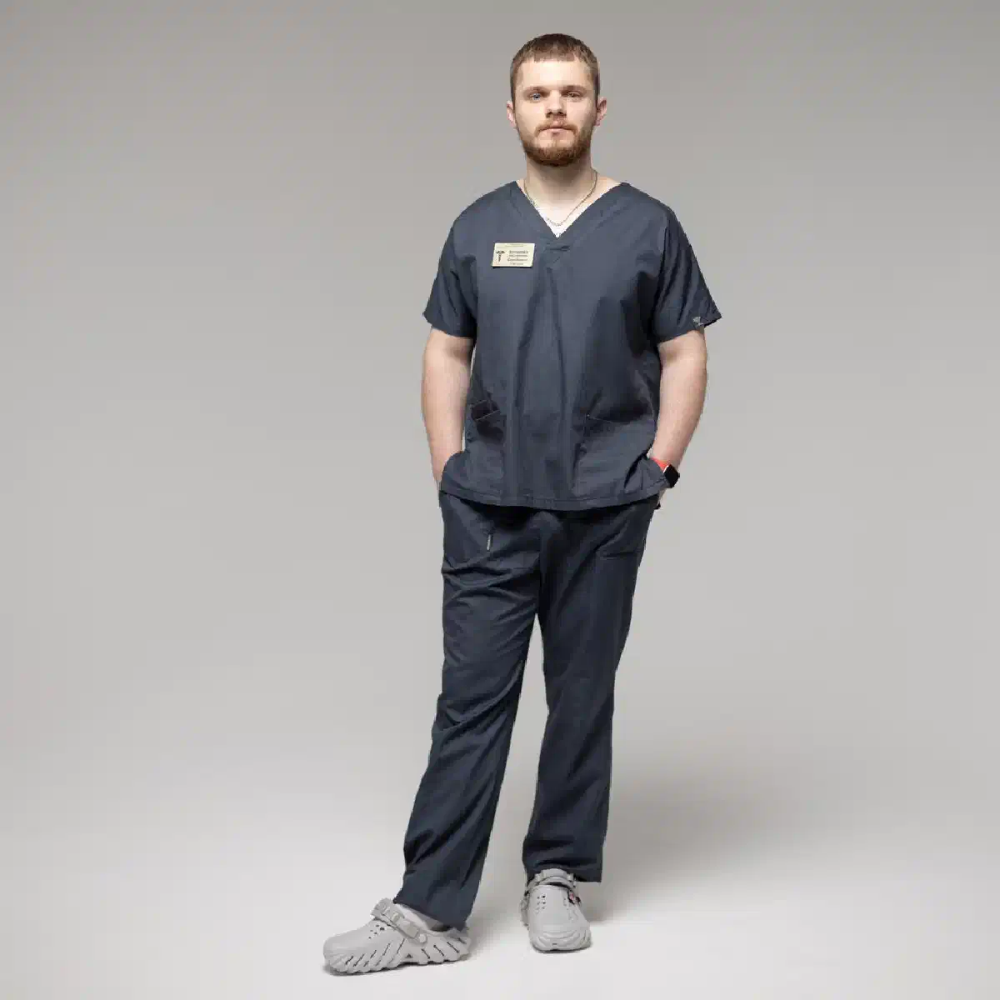
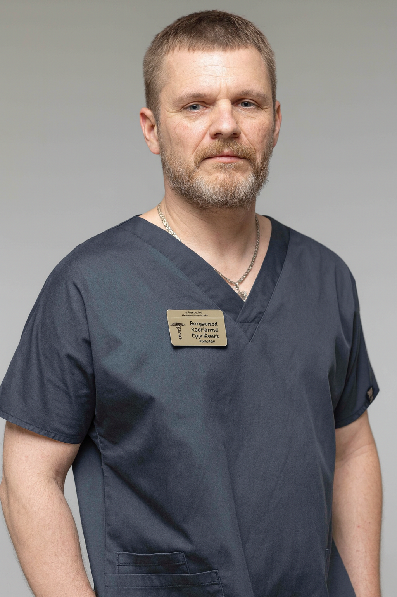

+38(068) 79 72 782
+38(068) 79 72 782Де лікують алкоголіків у Харкові
Шлях до тверезого життя починається зі звернення по допомогу


Безкоштовна консультація, працюємо цілодобово 24/7
Шлях до тверезого життя починається зі звернення по допомогу

Дата написання: 9 жовт. 2026 р.
Останнє оновлення: 11 жовт. 2026 р.
Алкогольна залежність — хронічна проблема, яка впливає на фізичне здоров’я, психоемоційний стан, стосунки з близькими та здатність людини контролювати вживання спиртного. Вибір місця й формату лікування залежить від тяжкості залежності, тривалості запоїв, наявності абстинентного синдрому, супутніх захворювань і готовності пацієнта працювати над збереженням тверезості. Тим, хто шукає, де лікують алкоголізм у Харкові, доступні різні варіанти допомоги: консультація нарколога, лікування вдома за стабільного стану, детоксикація, наркологічний стаціонар, кодування, психотерапія та реабілітаційні програми. Оптимальну схему лікування підбирають індивідуально після оцінки стану пацієнта.
Лікування алкогольної залежності може проводитися амбулаторно, вдома або в умовах стаціонару. Вибір залежить не лише від бажання пацієнта, а й від медичної безпеки конкретного формату. За відносно стабільного стану можна почати з консультації нарколога в Харкові, пройти обстеження та скласти індивідуальний план лікування. Якщо пацієнт перебуває в запої або відчуває виражену абстиненцію, першим етапом може стати детоксикація. За тяжкого стану, повторних судом, сплутаності свідомості, підозри на алкогольний делірій або серйозних супутніх захворювань лікування рекомендується проводити в стаціонарі.
Під час вибору наркологічної клініки важливо звертати увагу не лише на вартість послуг. Значення мають кваліфікація фахівців, можливість цілодобового спостереження, наявність стаціонару та комплексного підходу до лікування. Хороша програма не повинна обмежуватися однією крапельницею або процедурою кодування. Пацієнту необхідно оцінити фізичний стан, ступінь залежності, психоемоційні чинники та ризик повторного вживання. Вибираючи місце для лікування алкоголізму в Харкові, варто заздалегідь уточнити, які методи використовуються, чи проводиться первинна консультація та чи можна продовжити психотерапію або реабілітацію після стабілізації стану.
Звернення до фахівця бажано не відкладати до появи тяжких ускладнень. Приводом для консультації можуть бути почастішання епізодів вживання, втрата контролю над кількістю алкоголю, регулярні запої та виражене погіршення самопочуття після припинення вживання. Про формування залежності можуть свідчити потреба збільшувати кількість алкоголю, ранкове вживання для полегшення стану, повторні невдалі спроби припинити пити та продовження вживання попри проблеми в сім’ї, на роботі або зі здоров’ям. За появи таких ознак рекомендується лікування алкогольної залежності, а не лише періодичне усунення наслідків запою.
Деякі етапи допомоги можуть проводитися вдома, якщо стан пацієнта залишається стабільним і лікар не виявляє показань до госпіталізації. Удома можна провести первинний огляд, оцінити тиск, пульс, загальний стан, вираженість абстиненції та визначити подальшу тактику. За наявності медичних показань може призначатися інфузійна терапія. Однак лікування алкоголізму вдома в Харкові має обмеження. Галюцинації, судоми, виражена сплутаність свідомості, тяжка абстиненція та ознаки алкогольного делірію потребують лікування в стаціонарі або екстреної медичної допомоги.
Стаціонарний формат дає змогу забезпечити постійне спостереження та своєчасно реагувати на зміни стану пацієнта. Його можуть рекомендувати після тривалого запою, за тяжкого синдрому відміни, нестабільного тиску, вираженої тахікардії, повторного блювання, зневоднення, психічних порушень або поєднання алкогольної залежності із серйозними хронічними захворюваннями. Лікування алкоголізму в стаціонарі особливо важливе, якщо домашні спроби неодноразово завершувалися новим вживанням або стан пацієнта складно контролювати амбулаторно.
У наркологічному стаціонарі пацієнт перебуває під наглядом медичного персоналу. На першому етапі оцінюють загальний стан, вираженість абстинентного синдрому та наявність ускладнень. За потреби проводять детоксикацію, корекцію зневоднення й електролітних порушень, симптоматичну терапію та спостереження за життєво важливими показниками. Після стабілізації наркологічний стаціонар у Харкові може стати відправною точкою для подальшої протирецидивної терапії, психотерапії або реабілітаційної програми.
Побоювання щодо конфіденційності нерідко заважають людині своєчасно звернутися до фахівця. Наркологічна допомога може надаватися з дотриманням лікарської таємниці та вимог щодо захисту інформації про пацієнта. На першій консультації фахівець з’ясовує особливості вживання, оцінює фізичний та емоційний стан і пропонує можливі варіанти терапії. Анонімне лікування алкоголізму в Харкові особливо важливе для пацієнтів, які хочуть отримати професійну допомогу в конфіденційному форматі. Водночас анонімність не змінює медичних показань до госпіталізації або екстреної допомоги.
Лікування починається з консультації та оцінки стану. Лікар уточнює тривалість вживання, частоту запоїв, кількість алкоголю, попередні спроби лікування та хронічні захворювання. За наявності інтоксикації або вираженої абстиненції спочатку проводять медичну стабілізацію. Потім обговорюють методи, спрямовані на підтримання тверезості. У приватній наркологічній клініці в Харкові лікування може включати роботу нарколога, психолога та інших фахівців залежно від потреб пацієнта.
Комплексний підхід передбачає роботу не лише з наслідками вживання, а й із причинами повторних зривів. Програма може включати детоксикацію, лікування абстинентного синдрому, медикаментозну підтримку за показаннями, кодування, психотерапію, роботу із сім’єю та реабілітацію. Таке комплексне лікування алкоголізму допомагає поєднати медичну й психологічну допомогу замість використання лише однієї процедури.
Консультація необхідна для визначення оптимальної тактики. Нарколог з’ясовує тривалість залежності, характер вживання та наявність попередніх ускладнень. Додатково оцінюють тиск, пульс, загальний стан, ознаки абстиненції та хронічні захворювання. За потреби призначають додаткові дослідження. За результатами консультації нарколога лікар визначає, чи можливе лікування амбулаторно або вдома, чи пацієнту потрібен стаціонар.
Якщо людина перебуває в запої, довгострокову терапію зазвичай необхідно починати зі стабілізації фізичного стану. Виведення із запою в Харкові може включати медичний огляд, контроль життєво важливих показників, корекцію зневоднення та симптоматичну терапію за показаннями. Детоксикація допомагає впоратися з гострим станом, але не усуває саму залежність. Після неї важливо перейти до подальшого лікування, інакше ймовірність повторного запою зберігається.
Кодування може застосовуватися як один із компонентів лікування, однак підходить не кожному пацієнту й не повинно сприйматися як єдиний метод. Перед процедурою необхідні медична оцінка, період тверезості та добровільна згода пацієнта. Метод підбирають з урахуванням стану здоров’я, попереднього лікування та індивідуальних протипоказань. Кодування від алкоголізму в Харкові може поєднуватися з психологічною підтримкою та подальшою роботою над причинами вживання.
Навіть після усунення фізичної абстиненції в людини можуть зберігатися потяг до алкоголю та звичні моделі поведінки. Психотерапія допомагає виявляти ситуації, які провокують вживання, працювати з тривогою, стресом, конфліктами та хибними переконаннями щодо алкоголю. Психотерапія при алкогольній залежності особливо важлива для профілактики повторних зривів і формування стійкої мотивації до тверезості.
Психолог працює з емоційними та поведінковими механізмами залежності. На консультаціях пацієнт може розібратися, чому алкоголь став звичним способом долати стрес або інші труднощі. Додатково проводиться робота з мотивацією, потягом, сімейними стосунками та профілактикою зриву. Допомога психолога при алкогольній залежності в Харкові може надаватися як після медичної стабілізації, так і на етапі тривалого підтримувального лікування.
Реабілітація спрямована на закріплення результатів лікування та повернення людини до життя без постійного вживання алкоголю. Під час програми пацієнт вчиться розпізнавати тригери, справлятися з бажанням випити, відновлювати стосунки з близькими та змінювати звичні моделі поведінки. Реабілітація при алкоголізмі особливо актуальна за тривалої залежності, повторних запоїв і неодноразових зривів після попереднього лікування.
Після тривалого запою лікування починається з оцінки стану пацієнта. Важливо визначити вираженість абстиненції та виключити ускладнення, які роблять домашню допомогу небезпечною. Після медичної стабілізації рекомендується не обмежуватися однією процедурою. Наступним етапом стає робота із самою залежністю. Після виведення з тривалого запою пацієнту можуть запропонувати консультацію нарколога, протирецидивну терапію, кодування за показаннями, психотерапію або реабілітацію.
Повторні запої можуть свідчити про те, що попередня допомога усувала переважно гострі наслідки вживання, але основні механізми залежності збереглися. При повторному зриві важливо проаналізувати, що йому передувало: стрес, припинення психотерапії, повернення до попереднього оточення або сильний потяг до алкоголю. Лікування запійного алкоголізму потребує довгострокового плану, що включає медичну допомогу та профілактику повторного вживання.
Проблеми після вживання алкоголю можуть виникати вночі, у вихідні або святкові дні. Особливо важливо не відкладати звернення за вираженої абстиненції або різкого погіршення стану. За стабільного стану може знадобитися цілодобова наркологічна допомога в Харкові та огляд фахівця. Однак втрата свідомості, судоми, галюцинації, тяжке порушення дихання або ознаки делірію потребують екстреної медичної допомоги. Після стабілізації лікар визначає подальший формат лікування залежності.
Вартість лікування алкоголізму в Харкові починається від 2199 грн.
| Популярні послуги | Ціна |
|---|---|
| Нарколог Харків | Від 1500 грн |
| Крапельниця від алкоголю | Від 2199 грн |
| Виведення із запою вдома | Від 2199 грн |
| Кодування від алкоголізму | Від 6000 грн |
Багато пацієнтів цікавляться можливістю отримати допомогу конфіденційно. Формат оформлення та ведення медичної документації залежить від конкретного закладу й характеру наданої допомоги. Перед початком терапії варто уточнити умови конфіденційності безпосередньо в обраній клініці. Медична інформація про пацієнта має оброблятися відповідно до встановлених вимог. Водночас можливість анонімного лікування алкогольної залежності не повинна бути причиною відмовлятися від необхідної госпіталізації за небезпечного стану.
Телефон для консультації та виклику нарколога додому в Харкові: +38(050-021-69-57)

Статтю перевірено експертом
Богоденко Костянтин
Лікар-анестезіолог, ординатор
Можливо цікава стаття:
Чи можна померти від пиятики
Починати лікування варто вже тоді, коли вживання алкоголю стає регулярним, людині складно контролювати кількість випитого, з’являються запої, абстинентний синдром, проблеми зі здоров’ям, роботою або стосунками з близькими. Чим раніше людина звертається по допомогу, тим менший ризик тяжких ускладнень і прогресування залежності.
Алкогольна залежність належить до хронічних розладів, однак за умови правильно підібраного лікування можна досягти тривалої стійкої ремісії та повністю відмовитися від вживання алкоголю. Результат залежить від мотивації пацієнта, тяжкості залежності, тривалості вживання алкоголю та дотримання рекомендацій лікаря.
Лікування починається з консультації та оцінки стану пацієнта. Лікар уточнює тривалість і характер вживання алкоголю, наявність запоїв, симптоми абстиненції, хронічні захворювання та попередні спроби лікування. Якщо пацієнт перебуває у запої або має виражений синдром відміни, першим етапом може бути детоксикація та стабілізація стану.
Окремі етапи лікування алкогольної залежності можуть проводитися вдома. Це може бути виведення із запою, детоксикація, лікування легкого або помірного абстинентного синдрому, консультація лікаря та подальший медикаментозний супровід.
Стаціонар може знадобитися при тяжкому абстинентному синдромі, тривалому запої, судомах, галюцинаціях, сплутаності свідомості, підозрі на алкогольний делірій, виражених порушеннях артеріального тиску або серцевого ритму, а також при тяжких супутніх захворюваннях. У стаціонарі стан пацієнта можна контролювати цілодобово.
Якщо пацієнт перебуває у запої, першим етапом зазвичай є безпечне припинення вживання алкоголю та лікування абстинентного синдрому. Після стабілізації фізичного стану можна переходити до подальшого лікування залежності, протирецидивної терапії, психотерапії та інших методів.
Лікування може включати медикаментозну терапію, детоксикацію, протирецидивне лікування, психотерапію, роботу з мотивацією, кодування та реабілітаційні програми. Зазвичай найбільшу ефективність дає комплексний підхід, коли лікар підбирає методи з урахуванням стану та індивідуальних особливостей конкретного пацієнта.
Кодування може використовуватися як один з етапів лікування алкогольної залежності. Його завдання — допомогти людині зберігати тверезість і знизити ризик вживання алкоголю протягом певного періоду. Водночас кодування не усуває всі психологічні та поведінкові причини залежності, тому часто поєднується з консультаціями фахівця, психотерапією та іншими методами лікування.
Планове лікування алкогольної залежності зазвичай проводиться за поінформованою згодою самого пацієнта. Якщо людина не хоче лікуватися, родичі можуть звернутися за консультацією та обговорити зі спеціалістом способи мотивації до лікування. У станах, що становлять безпосередню загрозу життю або здоров’ю, необхідна екстрена медична допомога.
Тиск, погрози та постійні конфлікти часто лише посилюють опір. Родичам краще спокійно обговорювати конкретні наслідки вживання алкоголю та пропонувати консультацію спеціаліста. Може використовуватися мотиваційна бесіда, мета якої — допомогти людині усвідомити проблему та самостійно прийняти рішення про початок лікування.
Після стабілізації стану важливо продовжувати лікування та не обмежуватися лише детоксикацією або виведенням із запою. Знизити ризик зриву допомагають регулярні консультації спеціаліста, психотерапія, протирецидивне лікування, уникнення ситуацій, пов’язаних із вживанням алкоголю, підтримка близьких та зміна звичного способу життя.
Реабілітація потрібна не кожному пацієнту в однаковому обсязі, однак при сформованій залежності, повторних запоях і частих зривах вона може суттєво доповнювати основне лікування. Реабілітаційна програма допомагає працювати з психологічними причинами вживання алкоголю, формувати нові звички та навички тверезого життя, а також знижувати ризик повернення до алкоголю.
Анонимно

Никакими усилиями самостоятельно я не смогла преодолеть запой, и наступала ломка, сопровождаемая повышенным давлением и пульсом. Тогда я решила обратиться за помощью в клинику. Врачи оказали мне неоценимую поддержку! Уже прошел месяц, и я не только не употребляю алкоголь, но даже не испытываю к нему желания!
Анонимно
Могу с уверенностью порекомендовать данный центр для тех, кто ищет помощь при выводе из запоя. Я неоднократно обращался к ним и могу сказать, что цена соответствует качеству услуг. После проведения капельницы в клинике, вся тяга к алкоголю проходит, и я чувствую себя гораздо лучше. Это действительно эффективный метод, и я благодарен клинике за их профессионализм и заботу!
Анонимно
Неоднократно я пытался бросить алкоголь самостоятельно, но каждый раз уговаривал себя продолжать. Я сначала ограничивался одной бутылкой в день, потом двумя, и в итоге вновь попадал в запой. Но в итоге, я смог прекратить употребление алкоголя только после того, как обратился в центр Амбрелла и заказал у них услугу вывода из запоя. Уже не пью 3 месяца и удалось полностью восстановиться. Благодарю врача который меня вел - Алексея Валерьевича.
Анонимно
Здравствуйте! Я хотел бы выразить свою искреннюю благодарность клинике за быстрое и профессиональное освобождение моего мужа пивного рабства! Ранее у меня уже не было никаких надежд на его выздоровление. Однако, благодаря вашим перспективным методам лечения, мы теперь идем к полному отказу от алкоголя. Вы дали нам новую надежду и оказали неоценимую помощь! Спасибо вам за все!
Анонимно
Я долгое время страдал от запоев и не мог справиться с этой проблемой. Однако, когда я обратился в этот центр, они быстро помогли мне вернуться на ноги, и самое главное - предоставили мне возможность не возвращаться к запоям. Уже почти полгода я не испытываю запоев! Это для меня настоящее чудо, я никогда не думал, что смогу так преодолеть свои проблемы. Большое спасибо центру Амбрелла!
Анонимно
Благодарю ваш центр Амбрелла за оперативное и высококачественное лечение! Женский алкоголизм - это настоящее горе, с которым невозможно справиться в одиночку. Я уже потеряла надежду, но благодаря вашей помощи, она вернулась ко мне! Отдельная благодарность врачу Станиславу Вячеславовичу, а также благодарность Богу за то, что он послал мне такое чудо как ваша центр! Спасибо вам всем!
Анонимно
Хочу выразить благодарность врачу Владиславу Алексеевичу за то, что вы избавили меня от этого ужаса. Я уже был в отчаянии, перепробовал множество клиник и центров, но только здесь я наконец получил настоящую помощь! Алкоголь полностью разрушил меня, и если бы не ваша помощь, я, возможно, уже не был бы жив. С вами я смог вернуть себе жизнь и буду благодарен вам всегда!
Номер телефону:
+380 (68) 797 27 82
+380 (50) 021 69 57
Адресу наркологічного центра вашого міста уточнюйте за
телефоном
Працюємо: Київ, Одеса, Львів, Харків, Дніпро, Запоріжжя,
Черкасах, Чугуєві, Чорноморську, Кам'янському
Telegram: t.me/umbrellaplus
Графік работы: Цілодобово